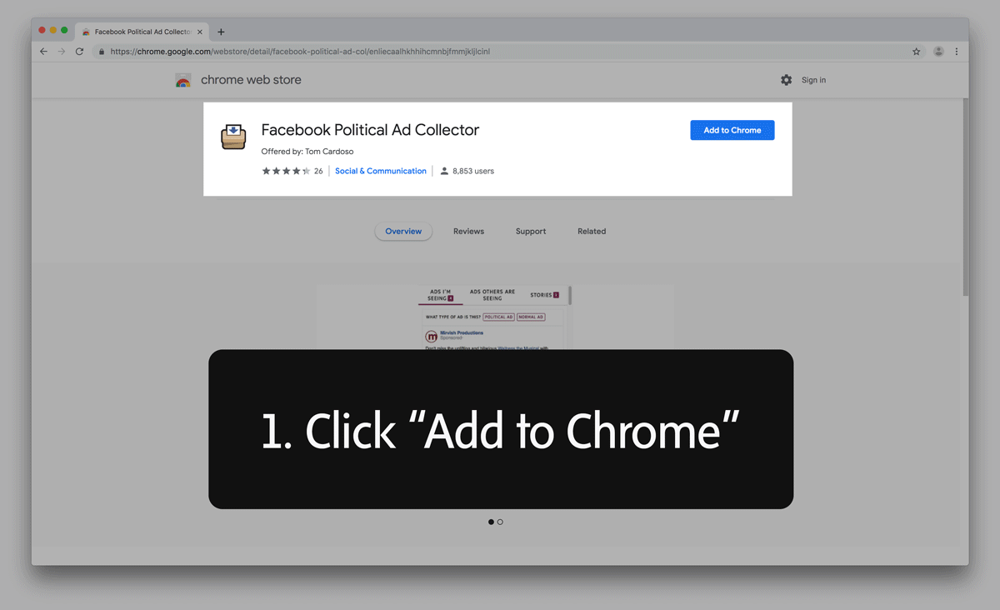
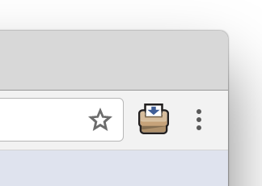
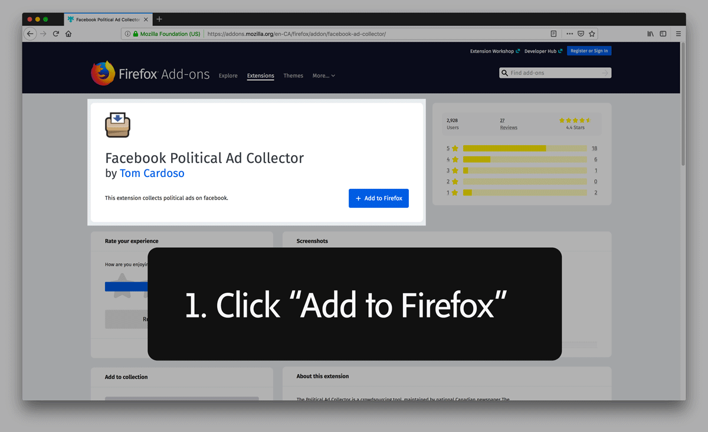
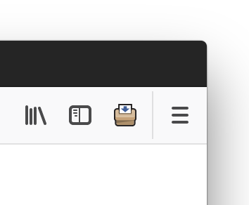
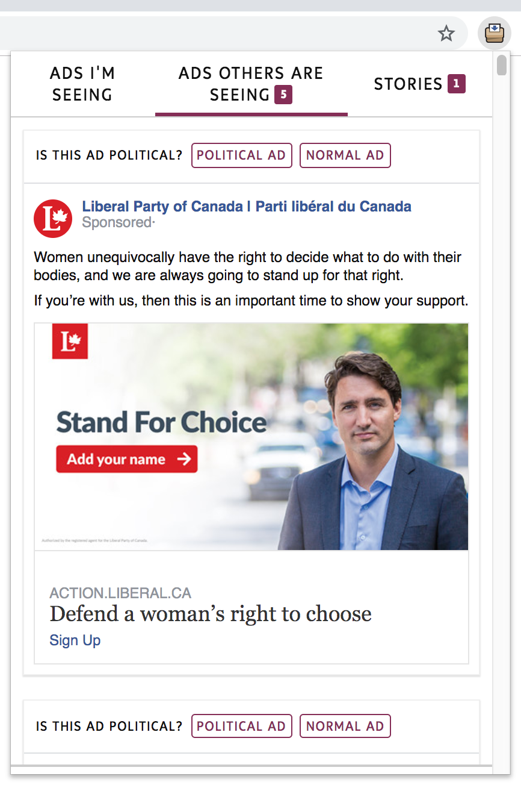

How it works
The Political Ad Collector is a tool you add to your Web browser. It copies the ads you see on Facebook, so anyone, on any part of the political spectrum, can see them.
It doesn’t collect your personal information. We take your privacy very seriously.
What we collect
- Text and links in the ad
- The picture in the ad
- Information Facebook provides about the ad’s target audience
- The time and date the ad was seen
- The number of times the ad has been seen
- The ad’s language of origin
What we don’t collect
Anything else, including:
- Your Facebook ID number
- Who has liked and shared a post
- Your name, birthday, friends list, etc.
- Identifying information about who saw what ad
Why it matters
Online ads are usually seen only by the audience the advertiser wants to target, and then they disappear. This makes it difficult for the public to monitor them and hold advertisers, including political groups, accountable. This isn’t a partisan issue. We think it’s important for our democracy to check what politicians of all stripes are saying. In the past, news organizations using this tool have found deceptive ads and political groups making misleading claims).
How to start
Instructions for Chrome
See instructions for Firefox instead - Go to this link. It will open a new tab that takes you to the Chrome Web Store.
- Click the blue button that says + ADD TO CHROME.
- A little window will pop up that says “Add ‘Facebook Political Ad Collector?’ It can: Read and change your data on all facebook.com sites, fbads.theglobeandmail.com, and projects.propublica.org.” This is the disclaimer Chrome requires us to use, but we promise we aren’t changing your Facebook data or collecting anything besides the ads. If you’re OK with that, click the white “Add extension” button.
- You’ll see the Political Ad Collector icon in the top right corner of your browser.

There will also be a note telling you it has been installed. - Head to Facebook and start collecting! Click on the icon to start setting up the Political Ad Collector. You’ll need to confirm your language and country, and you can read more technical information about the tool. If you accept this, click the Accept button.
- Now all you have to do is log on to Facebook and look at your timeline. To see ads you’ve gathered, just click on the Political Ad Collector icon.
Instructions for Firefox
See instructions for Chrome instead - Go to this link. It will open a new tab that takes you to the Firefox Add-ons store.
- Click the blue button that says + Add to Firefox. You may see a small window that says “addons.mozilla.org Firefox prevented this site from asking you to install software on your computer.” Please click the blue Allow button.
- You will then see a window that says “Add Facebook Political Ad Collector?” and asks for your permission. This is a disclaimer Firefox requires us to use, but we promise that the only thing we are accessing is the ads you see on Facebook. If you’re OK with that, click the blue Add button.
- Another window will tell you the Facebook Political Ad Collector has been added to Firefox. Click OK.
- You’ll see the Political Ad Collector icon in the top right corner of your browser.

Click on the icon to start setting up the Political Ad Collector - Head to Facebook and start collecting! You’ll need to confirm your language and country, and you can read more technical information about the tool. If you accept this, click the Accept button.
- Now you have to do is log on to Facebook and look at your timeline. To see ads you’ve gathered, just click on the Political Ad Collector icon.
Want to do more?
The tool gives you the option to decide whether or not an ad is political. This helps train our “artificial intelligence tool” so it can flag political ads. If you want to tell us an ad is political, click “Political Ad.” If it’s not political, click “Normal Ad.” Sometimes ads aren’t clearly political, and that’s OK. Just choose what you think is best.

And if you want to help the most? Please share our tool with your friends and family on Facebook! Here’s our Facebook page where we’ll keep you posted on what we learn.
Need help, or have any questions about the project? Email our team at politicalads@globeandmail.com.